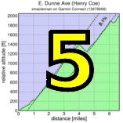

|  |  |
 |
|
Welch Creek
|
Simply one of the toughest climbs under 2000 feet in the Bay Area... But you are ready.
| results? | right here! |
| profile |  |
| distance | 3.9 miles (6.3 km) |
| climbing | 1867 ft (569 meters) |
| grade | 9.10% |
| where? | see below |
| when? | 06 Nov 2010 |
| what time | registration 9:00 to 10:00 climb starts @ 10:10 |
| RSVP | check back later! |
| waiver | Please fill one out before the climb! |
| how? |  |
| how much? | $10 (free for juniors and those with volunteer credit) |
| why? | why not? |
| coordinator | |
| volunteers | sign up! |
| weather | Weather Underground Weather Bonk |
| other times | Strava UltraCycle |
| deja-vu? | 2007(6) |
| BikeMap | |
Sorry, folks! Our insurance requires all riders wear helmets during the climb, and we follow the USA Cycling rule against ear buds or other head phones. Rock to tunes before the climb, perhaps, but we need riders to pay attention to what's happening during the climb...
Meet @ Sunol Glen School parking lot, intersection of 11601 Main Street in Sunol
We'll have a key to access bathroom facilities and a water fountain at the school. To reduce congestion, please try to park away from the school in downtown Sunol or take BART. At 10:10am, we'll begin a low-key 4-mile ride to the intersection of Welch Creek Road and Calaveras Rd, where the real fun begins!
Volunteers make Low-Key tick! Without them, we no longer function. Please sign up for any week in the series using our new volunteer form! Thanks!!!